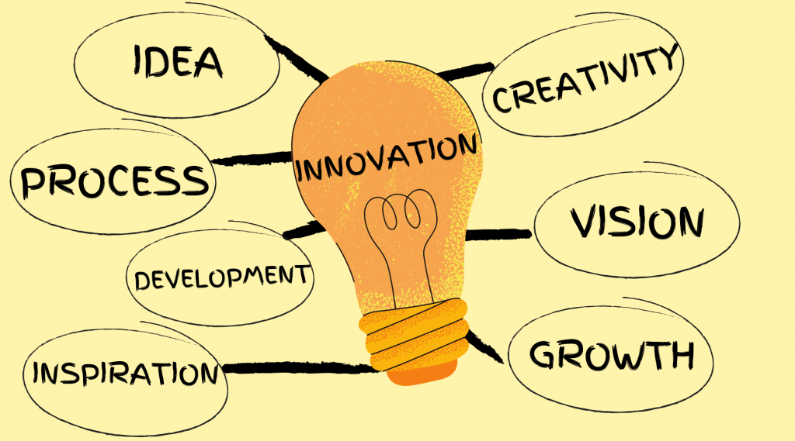
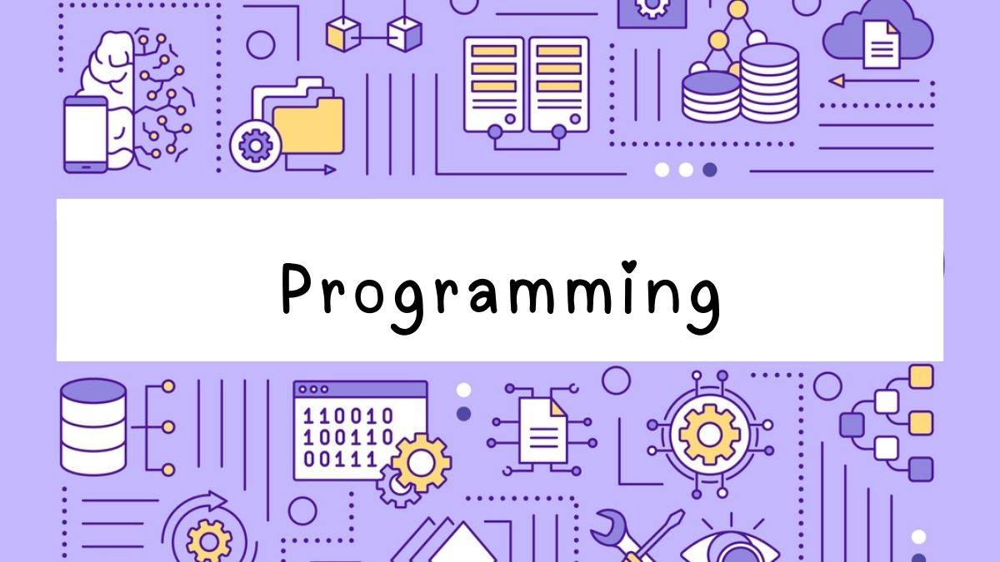

VHUB : The Future To Hostel Management
Welcome to our project website!



WHAT WILL VHUB DO?
Are you tired of managing hostel operations with manual processes and want to avoid confusion between roommates?
Introducing VHub: a comprehensive, digital platform designed to streamline hostel management and enhance student experiences.
Key features include:
- Room Management: Efficient room maintenance, vacancy tracking, and cleaning requests.
- Academic Profiles & Timetable Management: Centralized student profiles with academic records and achievements and an integrated timetable management system to help students organize their study schedules and co-curricular activities.
- Student Forums: An interactive space for discussions, study groups, and resource sharing among fellow students.
- Essential Services: Access to local travel, hospitals, and emergency services, ensuring convenience and safety for students.
- Notice Boards & Announcements: Digital bulletin boards for important updates, hostel events, and official notices, enabling effective communication.
MERITS
-
No more credential leaks.
Vhub Student forum effectively prevents the leakage of personal information by providing a secure community chat for students to connect with each other confidently.
-
No more hectic for opening different applications for different purposes
Making applications accessible to everyone from a centralized platform.
-
No more complex tabs that made it difficult for students to navigate and find functions!
Creating a more accessible and user-friendly UI that is easier to understand than VTOP
Future Scope
Our future plans include...
- Integration with other educational institutions, industries, and government agencies to facilitate collaboration, research, and knowledge sharing.
- Data visualization dashboards to facilitate data-informed decision making at various levels of the institution.
- Making sure we follow all the rules and regulations can be a lot to handle, but automated compliance management systems are a big help. They help us keep track of things like accreditation standards, government regulations, and our own policies. By automating these processes, we can make sure we're on top of everything and reduce the risk of getting into trouble. Plus, these systems give us real-time updates and reports, so we can stay on track and make things even better.
- Artificial Intelligence (AI) and Machine Learning (ML) to analyze student performance, predict outcomes, and provide personalized recommendations.